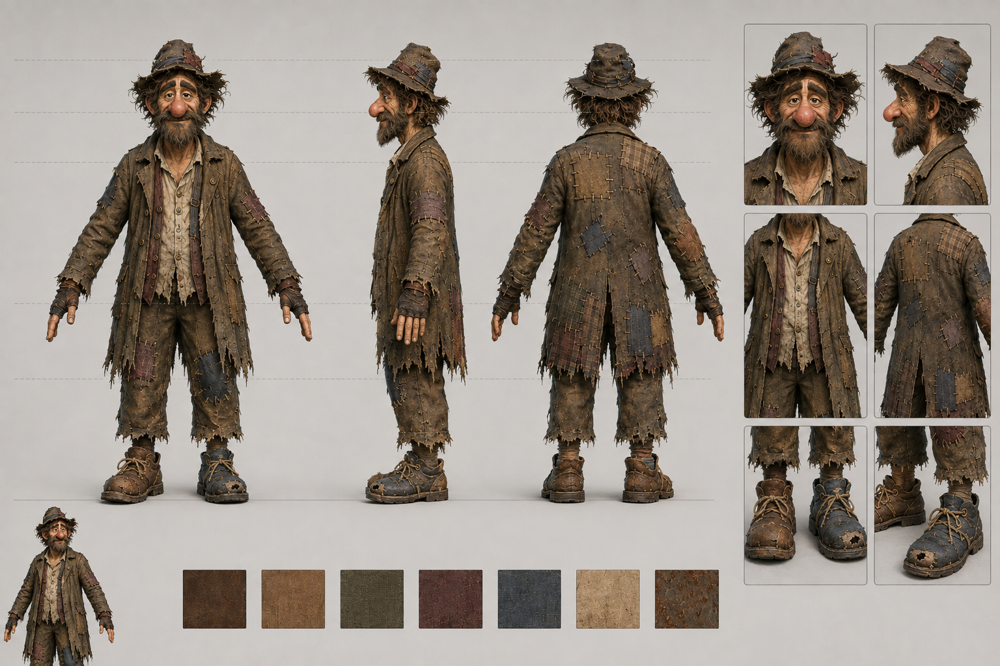

<!doctype html><html lang="en"><meta charset="utf-8"><meta name="viewport" content="width=device-width,initial-scale=1"><title>Ratch • Model review</title>
<style>
:root{color-scheme:dark;font-family:system-ui,sans-serif;background:#181715;color:#e9e1d5}*{box-sizing:border-box}body{margin:0}header{padding:22px 28px;border-bottom:1px solid #454036;display:flex;justify-content:space-between;align-items:baseline}h1{font-size:24px;letter-spacing:.02em;margin:0}header span{font-size:13px;color:#c7ad7c}nav{padding:14px 26px;display:flex;gap:8px;flex-wrap:wrap}button{border:1px solid #595044;background:#28241e;color:#ddd5c8;border-radius:5px;padding:9px 13px;cursor:pointer}button[aria-pressed=true]{background:#c3a16b;color:#171511;border-color:#c3a16b}main{display:grid;grid-template-columns:1fr 1fr;gap:18px;padding:0 26px 22px}figure{margin:0;min-width:0}figure img{width:100%;height:75vh;object-fit:contain;background:#22201d;display:block}figcaption{padding:9px 0;color:#c1b9ab;font-size:13px}footer{padding:8px 26px 24px;color:#bbb1a0;line-height:1.6;font-size:13px}a{color:#d5b57e}select{padding:8px;background:#28241e;color:#ddd5c8;border:1px solid #595044;border-radius:5px}@media(max-width:640px){main{grid-template-columns:1fr}figure img{height:65vh}header{display:block}}
</style>
<header><h1>Ratch / visual review</h1><span>12 September polish · r_player_model 2 · Pip/Fuse skeleton and clips</span></header>
<nav id="angles"></nav>
<main><figure><a id="full" href="portrait.png" target="_blank"></a><figcaption id="caption">Polished portrait — click image for full resolution</figcaption></figure><figure><a href="../../concepts/ratch_reference.png" target="_blank"></a><figcaption>User-provided reference / appearance and detail target</figcaption></figure></main>
<footer>Rebuilt eye sockets and drooping lids, a shaded facial texture, and broader layered hair. The game views use SDL_GPU/Vulkan in eyetoeye; the studio views use Blender lighting. Skin detail and hair remain more stylized than the reference.<br><label>Animation pose <select id="poses"><option value="">Choose a pose…</option></select></label> <button id="toggle">Switch pose angle</button> · Lean shows the game’s 34° spine bend over the standing weapon pose.<br><a href="../../source/ratch/ratch.blend">Blender source</a> · <a href="../../../assets/models/ratch/ratch.glb">Installed model export</a> · <a href="geometry_report.json">Geometry report</a> · <a href="../../source/ratch/LIMITATIONS.md">Remaining limitations</a></footer>
<script>
const views=[['Portrait','portrait'],['Face profile','face_side_audit'],['In game','in_game'],['Game close-up','in_game_closeup'],['Front','front'],['Three-quarter','three_quarter'],['Right profile','profile_right'],['Left profile','profile_left'],['Back','back'],['From below','head_low'],['From above','head_high'],['Previous portrait','../../source/ratch/revisions/pre_polish_20260912/portrait'],['Previous profile','../../source/ratch/revisions/pre_polish_20260912/face_side_audit'],['Previous in game','../../source/ratch/revisions/pre_polish_20260912/in_game']];
function show(label,path){render.src=path+'?revision=polish-20260912';render.alt='Ratch '+label;full.href=path;caption.textContent=label+' — click image for full resolution'}
for(const [label,file] of views){const b=document.createElement('button');b.textContent=label;b.setAttribute('aria-pressed',label==='Portrait');b.onclick=()=>{document.querySelectorAll('#angles button').forEach(x=>x.setAttribute('aria-pressed',false));b.setAttribute('aria-pressed',true);show(label,file+'.png');poses.value=''};angles.appendChild(b)}
let side=false;for(const [clip,f] of [['Idle_Gun_TwoHanded',12],['RUN',6],['RUN',18],['DUCKING',12],['GLIDE_SLIDE',12],['LEAN_LEFT',12],['JUMP',7],['Death',18]]){const o=document.createElement('option');o.value=clip+'_'+f;o.textContent=clip==='LEAN_LEFT'?'Lean left / game composition (34°)':clip+' / frame '+f;poses.appendChild(o)}
function pose(){if(poses.value){document.querySelectorAll('#angles button').forEach(x=>x.setAttribute('aria-pressed',false));show(poses.options[poses.selectedIndex].text+(side?' / side':' / three-quarter'),'animation/'+poses.value+'_'+(side?'side':'three_quarter')+'.png')}}
poses.onchange=pose;document.getElementById('toggle').onclick=()=>{side=!side;pose()};
</script></html>
